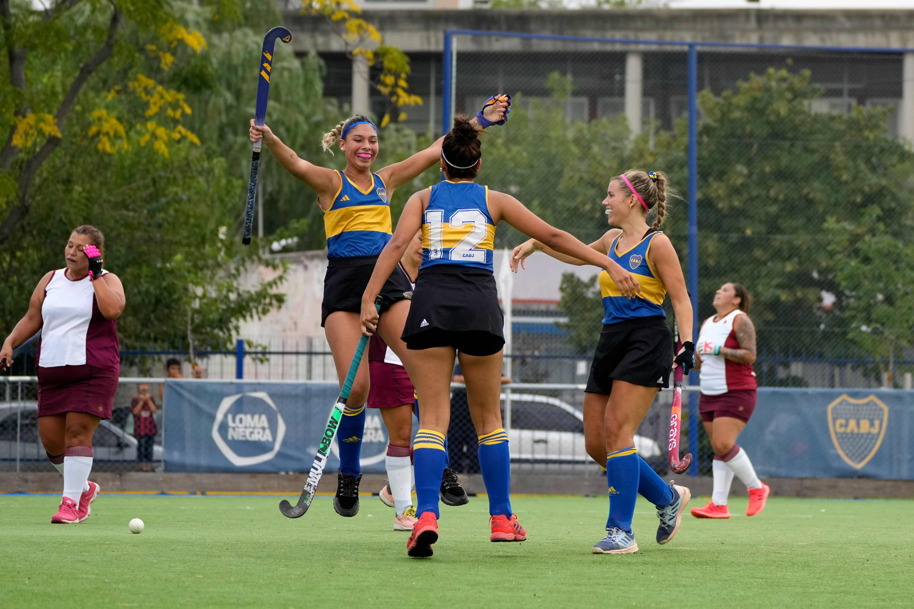

HISTORICO
El hockey sobre césped fue la última disciplina que comenzó a funcionar en Boca Juniors, y en menos de un año sus equipos «A» y «B» consiguieron el ascenso a la Liga «F» del Torneo Metropolitano de la Asociación Amateur de Hockey de Buenos Aires. Cuándo un equipo nuevo se inscribe en la «Federación de Hockey sobre césped» de la provincia comienza participando en la categoría «G», y de ahí va escalando.
La ex integrante de Las Leonas, Vanina Oneto, es la coordinadora del deporte en el club y una de las mayores figuras que comenzó con la idea de introducir el hockey en Boca. Su hija, Maia Findor, quién actualmente juega en plantel superior «B» de San Fernando, es la entrenadora de las categorías de inferiores del club de la Ribera.
